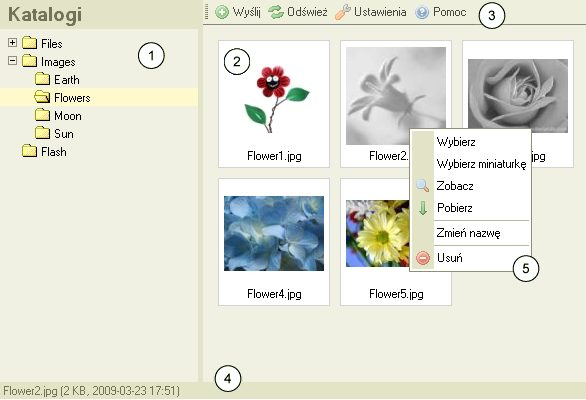

CKFinder - Interfejs UЕјytkownika
Interfejs uЕјytkownika zostaЕ‚ zaprojektowany tak, aby byЕ‚ przejrzysty i intuicyjny
nawet dla nowych uЕјytkownikГіw. WiД™kszoЕ›Д‡ dostepnych komend jest Е‚atwo dostД™pna przy uzyciu menu kontekstowego myszy
i może zostać wykonana jednym kliknięciem.
PoniЕјej przykЕ‚adowy zrzut z ekranu przedstawiajД…cy CKFindera:

- Drzewo katalogów: zawiera listę katalogów w postaci "drzewa", po którym można nawigować.
Katalogi sЕ‚uЕјД… do lepszego zorganizowania plikГіw.
- Drzewo plikГіw: wyЕ›wietla listД™ plikГіw w aktualnym katalogu.
- Pasek narzД™dzi: zestaw przyciskГіw, ktГіre po klikniД™ciu wykonujД… odpowiednie funkcje.
- Pasek statusu: przestrzeЕ„ uЕјywana do wyЕ›wietlania informacji
odnoЕ›nie wybranego pliku, iloЕ›ci plikГіw w katalogu itp.
- Menu kontekstowe:
zestaw pozycji dostepnych po klikniД™ciu na wybrany obiekt prawym klawiszem myszy.
SЕ‚uЕјy ono do wykonywania operacji specyficznych dla danego obiektu.
DostД™pne operacje zmieniajД… siД™ w zaleЕјnoЕ›ci od tego, co zostaЕ‚o wybrane.